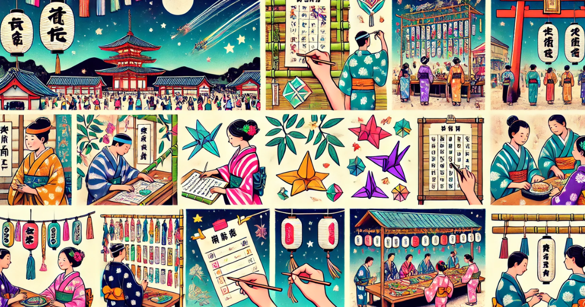
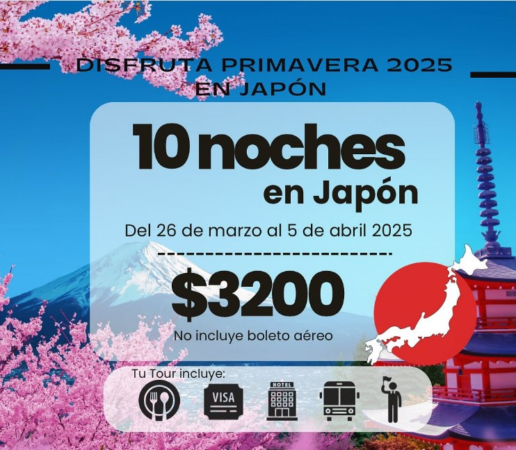

Inicio
¿Listo para explorar Japón como nunca antes? En Pocky Travel, te llevamos a un país donde los cerezos en flor, los templos milenarios y la energía vibrante de ciudades como Tokio se unen para crear una experiencia inolvidable.
Sobre Nosotros
En Pocky Travel, estamos comprometidos en hacer realidad tus sueños de viajar a Japón. Desde 2010, hemos trabajado para ofrecer experiencias únicas, con planes flexibles, pagos en cuotas y guías expertos que se encargan de todo por ti.
Tours
Tokio
La ciudad que nunca duerme, donde la tradición y la modernidad conviven en perfecta armonía. Desde los neones de Shibuya hasta los templos de Asakusa, Tokio te espera con sorpresas en cada esquina.
Kioto
El corazón espiritual de Japón, con templos que cuentan historias milenarias y paisajes que parecen sacados de un sueño. Kioto es un viaje en el tiempo al Japón de los samuráis y las geishas.
Hokkaido
Un paraíso natural para los amantes de los paisajes impresionantes. Desde los campos de lavanda en verano hasta las nieves eternas en invierno, Hokkaido es un espectáculo para los sentidos.
Eventos
Descubre los festivales más impresionantes de Tokio, Kioto y Hokkaido, cada uno con su encanto único. Desde fuegos artificiales en Tokio hasta mágicas luces de invierno en Hokkaido, prepárate para sumergirte en la cultura japonesa.
🌟 ¡Vive los festivales más espectaculares de Japón! 🌟
Te llevamos a descubrir lo mejor de cada región con un toque especial. ¡No te los pierdas! 🎉✨
🎎 Festivales en Tokio
🎭 Festivales en Kioto

Gion Matsuri
El Gion Matsuri es uno de los festivales más antiguos de Japón, famoso por sus desfiles y carrozas decoradas.
Daimonji Festival
Un espectáculo único donde se encienden grandes hogueras en las montañas de Kioto.

Aoi Matsuri
Uno de los tres grandes festivales de Kioto, conocido por sus procesiones históricas.
❄️ Festivales en Hokkaido
🚌 ¡Nosotros te llevamos! ¡Con transporte cómodo, guías expertos y momentos inolvidables, prepárate para disfrutar al máximo! 🥳💃
Ofertas
🌸VIAJE A JAPÓN PRIMAVERA 2025🌸✈️🇯🇵
🗓️Del 26 de marzo al 5 de abril 2025
El tour de 10 noches en Japón sin incluir el boleto aéreo vale $3200 dólares por persona. Visitan Tokyo, Monte Fuji, Osaka (Universal Studio, Súper Nintendo World), Kyoto y Nara. Incluye:
- 🏨 Hospedaje por 10 noches
- 🍱🍙🍣 Alimentación: 3 comidas diarias
- 🚅 Traslados (Shinkansen: tren bala)
- 📝 Trámites de visa de turismo japonesa
- 💁🏻♀ Guía en español
No incluye:
- ✈️ Boleto aéreo
- 🛡️ Seguro de viaje (obligatorio)
- 🛍️ Gastos personales